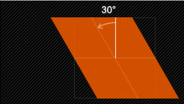
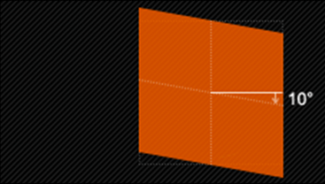
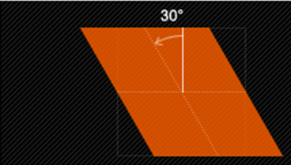
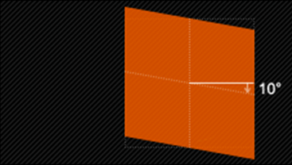

1、skew(x,y)使元素在水平和垂直方向同时扭曲（X轴和Y轴同时按一定的角度值进行扭曲变形）；

第一个参数对应X轴，第二个参数对应Y轴。如果第二个参数未提供，则值为0，也就是Y轴方向上无斜切。
2、skewX(x)仅使元素在水平方向扭曲变形（X轴扭曲变形）；

3、skewY(y)仅使元素在垂直方向扭曲变形（Y轴扭曲变形）

扭曲skew()函数能够让元素倾斜显示。它可以将一个对象以其中心位置围绕着X轴和Y轴按照一定的角度倾斜。
这与rotate()函数的旋转不同，rotate()函数只是旋转，而不会改变元素的形状。skew()函数不会旋转，而只会改变元素的形状。
Skew()具有三种情况：
1、skew(x,y)使元素在水平和垂直方向同时扭曲（X轴和Y轴同时按一定的角度值进行扭曲变形）；
第一个参数对应X轴，第二个参数对应Y轴。如果第二个参数未提供，则值为0，也就是Y轴方向上无斜切。
2、skewX(x)仅使元素在水平方向扭曲变形（X轴扭曲变形）；

3、skewY(y)仅使元素在垂直方向扭曲变形（Y轴扭曲变形）
